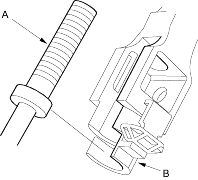
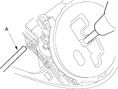
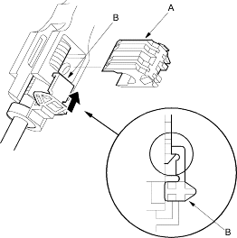

- Shift the shift lever to
 position.
position.
- Install the shift cable end (A) in the shift cable end holder (B), then shift the shift lever to
 position.
position.

- Insert a 6.0 mm (0.24 in.) pin (A) into the positioning hole on the shift lever bracket base through the positioning hole on the shift lever assembly. The shift lever is secured in position.

- Install the shift cable lock (A) to secure the shift cable end and shift cable end holder, then push the lock tab (B) up until it stops to lock the joint.

- Remove the 6.0 mm (0.24 in.) pin that was installed to hold the shift lever.
- Move the shift lever to each gear and verify that the A/T gear position indicator follows the transmission range switch.
- Push the shift lock release and verify that the shift lever releases.
- Reinstall the console panel and related parts.